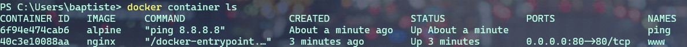

3.0 Les containers avec Docker
Après avoir présenté la plateforme Docker, nous allons voir comment créer des containers en ligne de commande pour lancer des services en tâche de fond et/ou pour rendre disponible dans un container des repertoires de la machine hôte.
Nous verrons comment lancer un container dans un mode d’accès privilégié, ainsi que les commandes de bases pour la gestion du cycle de vie des containers.
Avant la 1.13, lancer un container s’effectuait avec la commande : Docker Run sans le mot clé container.
Il est toujours possible de le faire.
Mais maintenant les commandes ont été regroupé aux composant auquel elles se rapportent. C’est la raison pour laquelle le mot clé container a été rajouté pour les commandes relatifs à la gestion des containers.
docker container run [OPTIONS] IMAGE [COMMAND] [ARG]
D’autres groupes de commande existent et nous les étudierons plus tard.
3.1 Hello World
Lançons notre premier container Hello-World.
Ouvrez un terminal et tapez :
docker container run hello-world

Le client demande au daemon (processus) de lancer un container basé sur l’image Hello-World . Cette image ,n’étant pas disponible en local, est téléchargée et le processus présent dans cette image est automatiquement exécuté.
Et dans le cas de notre Hello-world, il s’agit seulement d’écrire du texte sur la sortie standard : Hello from Docker suivi d’un texte.
Cet exemple est simple mais il met en avant le mécanisme sous-jacent. A la fin du texte on nous demande d’essayer un exemple plus ambitieux, c’est ce que nous allons faire par la suite.
Expérimentez la commande : docker container run hello-world sur votre machine
3.2 Ubuntu sous docker
Nous pouvons lancer un autre container basé sur l’image de Ubuntu et lui demander d’afficher Hello dans le contexte de cette image.
docker container run ubuntu echo hello

Analyser le contenu des cadres ci-dessus. A quelles actions correspondent-ils ?
3.2 Un container dans un mode Interactif
Le mode interactif permet d’avoir accès à un shell depuis le client local qui tourne dans le contexte du container.
Pour cela il faut rajouter deux options à notre commande :
-t qui permet d’allouer un pseudo terminal à notre container.
-i qui va permettre de laisser l’entrée standard du container ouverte.
Nous allons utiliser l’image Ubuntu qui contient les binaires et les bibliothèques du système d’exploitation Ubuntu. Le processus du container s’exécutera donc dans cette environnement, c’est-à-dire dans le système de fichier qui est amené par le système Ubuntu.
docker container run -t -i ubuntu bash
ou
docker container run -ti ubuntu bash

Nous voyons que nous avons accès à un shell ( coquille en anglais, interface système).
Nous reconnaissons sans peine le prompt Ubuntu/Linux dans lequel nous pouvons écrire par exemple une commande Linux : ls
Tapez dans le shell, la commande : cat /etc/issue.
Quelle information obtenez-vous ?
Pour sortir du container on va tuer le processus avec la commande : exit
Nous aurions pu faire la même chose en utilisant une autre image que celle d’Ubuntu. Par exemple : Nous souhaitons lancer un container basé sur la distribution Linux Alpine. C’est une distribution légère et sécurisée.
docker container run -t -i alpine
ou
docker container run -ti alpine

Vous savez maintenant lancer un shell interactif dans un container.
Quand on lance un container avec seulement la commande docker container run
par défaut le container est exécuté en foreground, mais si l’on veut l’exécuter en background, c’est-à-dire en tâche de fond, il faudra utiliser l’option -d et la commande retournera alors l’ identifiant du conteneur que l’on pourra utiliser par la suite pour effectuer différentes actions.
Par exemple nous pouvons lancer un container basé sur l’image nginx, un serveur http.
Container NGINX en foreground
Création du conteneur en foreground, cela signifie que l’on ne récupère pas la main
docker container run nginx

Le conteneur est lancé et occupe notre console. Nous n’avons pas la main.
Container NGINX en background
docker container run -d nginx

Nous voyons ici que nous avons NGINX qui tourne en tâche de fond et nous pouvons accéder à ce container par la suite grâce à son identifiant.
Nous pourrions aussi accéder à ce serveur web depuis un navigateur. Cela n’est actuellement pas possible car nous n’avons pas publié de port.
3.3 Publication de port.
La publication d’un port est utilisée pour qu’un container puisse être accessible depuis l’extérieur.
Afin de publier un port nous utilisons l’option -p HOST_PORT:CONTAINER_PORT.
Cela permet de publier un port du conteneur sur un port de la machine hôte.
L’option -P quant à elle laisse le choix du port au docker démon.
Reprenons notre container NGINX qui est un serveur http. Par défaut, NGINX est un processus qui se lance sur le port 80 dans le container. Si nous souhaitons accéder à notre container depuis un navigateur de la machine hôte sur le port 8080 de la machine hôte, nous lançerons le container nginx avec la commande suivante :
docker container run -d -p 8080:80 nginx

Maintenant, nous pouvons ouvrir notre navigateur sur l’adresse : http://localhost:8080

3.4 Bind-mount
Nous allons maintenant voir comment monter un répertoire de la machine hôte dans un container.
Cela s’effectue grâce à l’option -v <HOST_PATH>:<CONTAINER_PATH>
Il existe une autre notation avec l’option --mount type=bind, src=<HOST_PATH>,dst=<CONTAINER_PATH>
Cela permet de partager,par exemple,le code source d’un programme présent sur une machine hôte avec des containers
ou de monter la socket Unix du daemon Docker (/var/run/docker.sock) pour permettre à un container de dialoguer avec le daemon.
3.4.1 Exemple 1 : monter un dossier ‘www’
Quand vous développez une application et que vous modifiez le code source, il peut être intéressant que cela soit pris en compte dans le conteneur.
C’est le cas lors du développement d’une application web.
Nos fichiers sources sont sur une machine locale, et dans un conteneur nous avons un serveur WEB avec NGINX par exemple.
Nous allons alors monter le dossier www local dans le container.
docker container run -v $PWD/www:/usr/share/nginx/html -d -p 80:80 nginx
Ou
docker container run –mount type=bind,src=$PWD/www,dst=/usr/share/nginx/html -d -p 80:80 nginx
$PWD est une variable d’environnement qui va être créé par le SHELL et prendra comme valeur le chemin du répertoire courant dans lequel la commande a été lancé.

3.4.2 Exemple 2 : Intéragir avec le Docker Daemom
Dans cet exemple nous allons voir comment lier(bind) /var/run/docker.sock.
Ce qui nous permettra d’interagir avec le Docker Daemon directement depuis le container et cela nous donnera accès à l’ API du Daemon.

Pour LINUX UNIQUEMENT
Créons donc un simple container : avec l’image d’ Alpine.
docker container run --rm -it --name admin -v /var/run/docker.sock:/var/run/docker.sock alpine
Maintenant que le container est monté, et branché au Docker Daemon, nous pouvons lui envoyer des requêtes.
Depuis le Shell: Installons CURL :
apk add curl pour ajouter l’utilitaire CURL.
Nous allons lancer une requête http POST sur le Docker DAEMON :
curl -X POST –unix-socket /var/run/docker.sock -d '{"Image":"nginx:1.12.2"}' -H 'Content-Type: application/json' http://localhost/containers/create
Cela aura pour effet de demander au Docker Daemon de créer un nouveau container avec l’image NGINX version 1.12.2.
Le paramètre -X POST permet d’effectuer quel type de requête http ?
Sous quel format sont envoyés les instructions de configuration de l’image Docker à créer ?
Pour lancer le container depuis le container ADMIN :
curl -XPOST –unix-socket /var/run/docker.sock http://localhost/containers/6b24...283b/start
Dans cette commande, à votre avis à quoi corresponde la chaine de caractère : 6b24...283b ?
Pour WINDOWS UNIQUEMENT
Bientôt disponible ….
3.4.3 Exemple 3 : Ecouter les actions demandées au Docker Daemon
Nous allons lancer un autre dans laquel le socket est monté. Et nous allons écouter les actions demandées sur le Docker Daemon. Même ceux provenant d’autres containers.
docker container run –name admin -ti -v /var/run/docker.sock:/var/run/docker.sock alpine
curl –unix-socket /var/run/docker.sock http://localhost/events
3.5 Limitation des ressources
Nous avons dit que le lancement d’un containeur revient en fait à exécuter un processeur , et par défaut, il n’y a pas de limite de consommation des ressources matériels. Par exemple, Un container pourra utiliser toute la RAM et impacter tout les autres containeurs qui tournent sur la même machine hôte.
Nous pouvons toutefois imposer des limites à un containeur.
Lançons un containeur avec l’image estesp/hogit qui a pour objectif de consommer de la ram.
docker container run --memory 32m estesp/hogit
Avec --memory 32m, nous avons fixé une limite : quand le processus aura atteint la limite de 32M de RAM consomméecho, il sera tué par Docker.
Nous pouvons limiter l’utilisation du CPU également.
Lançons un containeur avec l’image progrium/stress qui va se charger de stresser les cœurs du CPU.
docker container run -it –rm progrium/stress -–cpu 4
Ici les 4 cœurs du CPU serons utilisés car nous n’avons pas imposé de limite.
Maintenant lançons la même commande avec le flag --cpus 0.5 pour limiter l’utilisation du CPU à la moitié d’un cœur. (12% d’utilisation)
docker container run -it --rm progrium/stress -–cpu 4 –-cpus 0.5
En utilisant la valeur du flag : --cpus 2 , nous limitons l’utilisation à 2 cœurs seulement. (50% d’utilisation)
3.6 Les droits dans un container
Dans un containeur, s’il n’est pas précisé explicitement, l’utilisateur root sera utilisé comme propriétaire.
L’utilisateur root du containeur correspond à l’utilisateur root de la machine hôte.
Une bonne pratique est d’utiliser un autre utilisateur pour lancer le containeur.
Il y a plusieurs façons de le définir : soit à la création de l’image, soit en utilisant l’option –user, soit en changeant l’utilisateur dans le processus du container (gosu).
Lançons un container basé sur l’image Alpine et exécutons l’instruction sleep 10000.
docker container run -d alpine sleep 10000
Nous allons vérifier le owner du processus depuis la machine hôte :
Pour LINUX :
ps aux | grep sleep
pour WINDOWS :
Sous Windows, nous n’avons pas accès aux commandes LINUX nativement.
Il faut utiliser les commandes Docker natives pour avoir accès aux informations liées aux processus des containeurs par l’intermédiaire de leur identifiant ou nom et
via la commande top.
Récupérez l’identifiant ou le nom du container obtenue avec la commande précédente puis :
docker container top <identifiant ou nom du container>

Faisons la même manipulation, mais cette fois avec l’image officielle de MongoDB
docker container run -d mongo
On constate que le processus est la propriété d’un owner qui posséde un UID de 999.
Nous verrons par la suite comme il est possible de configurer le owner d’un processus lors du montage de container.
3.6 Des options utiles
Note
--namequi permet de donner un nom au container.--rmpour supprimer le container quand il est stoppé.--restart=on-failurepour relancer le container en cas d’erreur.
3.7 Les commandes de base avec Docker
docker container <command>
Commande |
Description |
|---|---|
run |
Création d’un container |
ls |
Liste des containers |
inspect |
Détails d’un container |
logs |
Visualisation des logs |
exec |
Lancement d’un processus dans un container existant |
stop |
Arrêt d’un container |
rm |
Suppression d’un container |
La commande
ls:
La commande docker container ls montre les containers qui sont en cours d’execution.

Pour lister tout les containers actifs et stoppés : docker container ls -a.
Pour lister les identifiants des containers actifs et stoppés : docker container ls -a -q.
A partir d’un nom ou identifiant d’un container on peut l’inspecter :

La commande renvoie une multitude d’information de configuration du container. On peut utiliser des templates (Go Template) pour formater les données reçues et même extraire seulement des informations nécessaires : par exemple : Obtenir l’IP
docker container inspect --format '{{ .NetworkSettings.IPAddress }}' clever_kilby
La commande
logs:
Cette commande,nous permets de visualiser les logs d’un container , l’option -f permet de les lire en temps réel.
Créons un container sous une image alpine qui exécutera une commande ping 8.8.8.8 et qui sera nommé : ping
docker container run --name ping -d alpine ping 8.8.8.8
Puis, écoutons en temps réel les logs du container nommé ping
docker container logs -f ping

La commande
exec:
Cette commande permet de lancer un processus dans un container existant pour faire du débug par exemple.
Dans ce cas nous utiliserons les options -t et -i pour obtenir un shell intéractif.
Exemple : lançons un container qui attend 100000 secondes, et demandons ensuite d’ouvrir un shell pour lister les processus de ce container.
docker container run -d --name debug alpine sleep 100000
On lance le container avec l’option -d pour le mettre en tâche de fond et récupérer la main sur le terminal et on lui donne le nom debug pour le manipuler facilement.
Ensuite nous utilisons la commande exec qui injectera dans notre container une commande, à savoir ici, la demande d’ouverture d’un shell.
docker container exec -ti debug sh

Sur la capture d’écran :
Dans le shell, nous avons exécuté la commande ps aux. Qui permet de lister les processus et leur owner.
On constact que le processus de PID 1 , correspond à la commande sleep.
Et le processus de PID 15 correspond à notre ps aux.
Warning
Si l’on kill le processus de PID 1, le container s’arrêtera, car un container n’est actif que tant que son processus de PID 1 spécifié au lancement est en cours d’exécution.
La commande
stop:
Cette commande permet de stopper un ou plusieurs containers.
docker container stop <ID>
docker container stop <NAME>
Nous pouvons combiner des commandes !
Rappel : Obtenir la liste des containers en cours d’exécution :
docker container ls -q
Donc pour stopper les containers en cours d’exécution :
docker container stop $(docker container ls -q)
Les containers stoppés existent toujours :
docker container ls -a
La commande
rm:
Pour supprimer un container.
docker container rm <ID>
docker container rm <NAME>
Donc, par combinaison de commande, nous pouvons supprimer définitivement un ou plusieurs containers qui sont déjà stoppé.
docker container rm $(docker container ls -aq)
Avec l’option -f nous pouvons forcer l’arrêt d’un container et le supprimer dans la foulée.
3.8 En pratique :
Lançons quelques containers pour pratiquer, vous devez être en mesure de comprendre maintenant la finalité de ces 3 commandes :
docker container run -d -p 80:80 --name www nginx
docker container run -d --name ping alpine ping 8.8.8.8
docker container run hello-world
Listons les containers :
Nous voyons les 2 premiers containers avec le statut UP.
Nous ne voyons pas le 3 ieme container pour la simple raison qu’une fois qu’il a effectué son action : echo hello world , il s’est arrêté automatiquement.
Par contre avec un :
docker container ls -a celui-ci est visible.

Son statut est exited, indiquant qu’il n’est pas démarré.
Nous pouvons inspecter les containers et en particulier extraire une information comme l’adresse IP de notre serveur web NGINX :
docker container inspect --format '{{ .NetworkSettings.IPAddress }}' www

Nous pouvons lancer une commande dans un container en cours : par exemple nous voulons lister la liste des processus en cours dans le container ping :
docker container exec -ti ping sh
Un shell est alors disponible, et dedans nous pouvons taper la commande : ps aux

Tapez : exit pour sortir du shell.
Stoppons les containers : ping et www
docker container stop ping www
faites ensuite : docker container ls
Que constatez vous ? Pourquoi ?
Même question avec : docker container ls -a
Supprimons maintenant les containers créés :
docker container rm $(docker container ls -a -q)
3.9 Exercices :
3.9.1 Exercice 1 : Hello From Alpine
Le but de ce premier exercice est de lancer des containers basés sur l’image alpine.
Lancez un container basé sur alpine en lui fournissant la command echo hello
Quelles sont les étapes effectuées par le docker daemon ?
Lancez un container basé sur alpine sans lui spécifier de commande. Qu’observez-vous ?
3.9.2 Exercice 2 : Shell intéractif
Le but de cet exercice est lancer des containers en mode intéractif.
Lancez un container basé sur alpine en mode interactif sans lui spécifier de commande
Que s’est-il passé ?
Quelle est la commande par défaut d’un container basé sur alpine ?
Naviguez dans le système de fichiers
Utilisez le gestionnaire de package d’alpine (
apk) pour ajouter un package :apk updateetapk add curl.
3.9.3 Exercice 3 : foreground / background
Le but de cet exercice est de créer des containers en foreground et en background.
Lancez un container basé sur alpine en lui spécifiant la commande
ping 8.8.8.8.Arrêter le container avec
CTRL-C
Le container est t-il toujours en cours d’exécution ?
Note
Vous pouvez utiliser la commande docker ps que nous détaillerons prochainement, et qui permet de lister les containers qui tournent sur la machine.
Lancez un container en mode interactif en lui spécifiant la commande
ping 8.8.8.8.Arrêter le container avec
CTRL-P CTRL-Q
Le container est t-il toujours en cours d’exécution ?
Lancez un container en background, toujours en lui spécifiant la commande
ping 8.8.8.8.
Le container est t-il toujours en cours d’exécution ?
3.9.4 Exercice 4 : Publication de port
Le but de cet exercice est de créer un container en exposant un port sur la machine hôte.
Lancez un container basé sur
nginxet publiez leport 80du container sur leport 8080de l’hôte.Vérifiez depuis votre navigateur que la page par défaut de
nginxest servie surhttp://localhost:8080.Lancez un second container en publiant le même port.
Qu’observez-vous ?
3.9.5 Exercice 5 : Liste des containers
Le but de cet exercice est de montrer les différentes options pour lister les containers du système.
Listez les containers en cours d’exécution.
Est ce que tous les containers que vous avez créés sont listés ?
Utilisez l’option
-apour voir également les containers qui ont été stoppés.Utilisez l’option
-qpour ne lister que les IDs des containers (en cours d’exécution ou stoppés).
3.9.6 Exercice 6 : Inspection d’un container
Le but de cet exercice est l’inspection d’un container.
Lancez, en background, un nouveau container basé sur nginx en publiant le port 80 du container sur le port 3000 de la machine host.
Notez l’identifiant du container retourné par la commande précédente.
Inspectez le container en utilisant son identifiant.
En utilisant le format Go template, récupérez le nom et l’IP du container.
Manipuler les Go template pour récupérer d’autres information.
3.9.7 Exercice 7 : exec dans un container
Le but de cet exercice est de montrer comment lancer un processus dans un container existant.
Lancez un container en background, basé sur l’image alpine. Spécifiez la commande
ping 8.8.8.8et le nom ping avec l’option--name.Observez les logs du container en utilisant l’ID retourné par la commande précédente ou bien le nom du container.
Quittez la commande de logs avec CTRL-C.
Lancez un shell
sh, en mode interactif, dans le container précédent.Listez les processus du container.
Qu’observez vous par rapport aux identifiants des processus ?
3.9.8 Exercice 8 : cleanup
Le but de cet exercice est de stopper et de supprimer les containers existants.
Listez tous les containers (actifs et inactifs)
Stoppez tous les containers encore actifs en fournissant la liste des IDs à la commande
stop.Vérifiez qu’il n’y a plus de containers actifs.
Listez les containers arrêtés.
Supprimez tous les containers.
Vérifiez qu’il n’y a plus de containers.
3.10 En résumé
Nous avons commencé à jouer avec les containers et vu les commandes les plus utilisées pour la gestion du cycle de vie des containers
(run, exec, ls, rm, inspect). Nous les utiliserons souvent dans la suite du cours.
C’est parfois utile d’avoir un Shell directement sur la machine hôte.
C’est-à-dire la machine sur laquelle le Docker Daemon tourne.
Si l’on est sur linux, le client et le daemon tournent sur la même machine.
Par contre le docker daemon va tourner sur une machine virtuelle sous Windows alors que le client sera lui sur une machine locale.